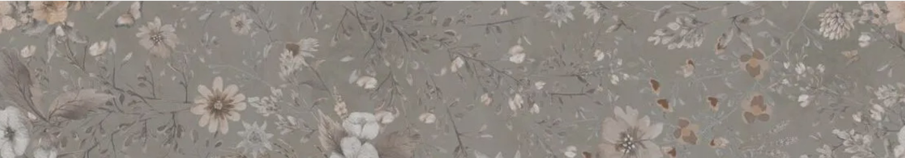
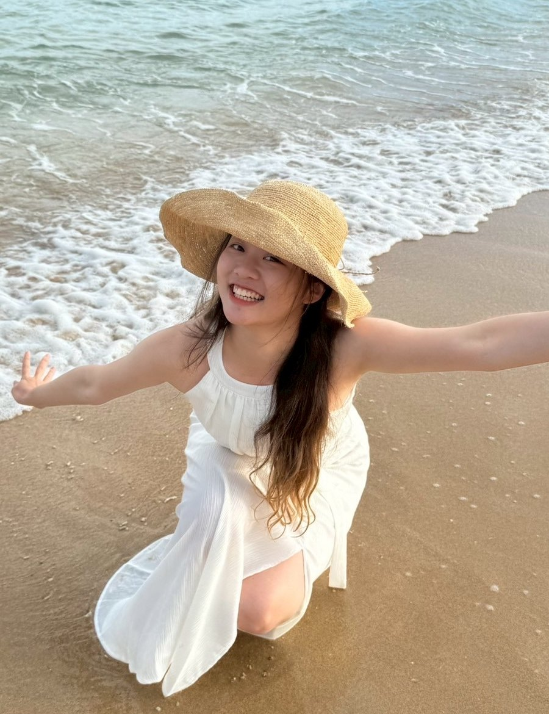

I study how machines listen. I also teach, choreograph, and run science camps.
Electrical engineering student at National Taiwan University, graduating June 2027. Interested in large audio-language models, vision-language-action models, and efficient inference and training.

Pretraining.
Still training.
Steering large audio-language models through their activations, and studying how much they depend on what they hear.
Efficient embedding and tokenizer methods for sovereign language models, and distributed training that needs little communication.
Multimodal foundation models and vision-language-action models for embodied intelligence.
Signal processing and data augmentation experiments for estimating pose from WiFi channel state information.
Three checkpoints saved so far.
Gradient descent for humans.
With the TA team, built and ran the first Teaching Monster Challenge, where AI agents produce complete instructional videos for a target learner.
Designed and graded homework on prompt-based tasks and model editing methods, including ROME and MEMIT.
Things I overfit to for a semester.
A pruned, quantized CNN running on-device. First prize, NXP and Avnet corporate award, MAKE NTU 2025.
One-step generative policy learning for offline reinforcement learning. Selected for oral presentation at the course mini-conference.
Transfer learning for a low-resource Indigenous language of Taiwan.
2023 Taiwan IMO second-stage selection and training camp. Individual gold at the 24th TRML, 29th nationwide.
Led and choreographed the Chinese dance for NTU Electrical Engineering Night 2026.
Chief organizer of a year-long program running science camps for Indigenous children in rural communities.
NTU EE women's basketball team.
Mandarin, Taiwanese Hokkien, English. Learning French and Japanese.